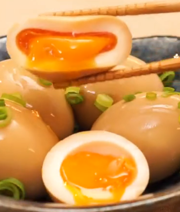
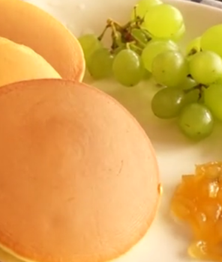
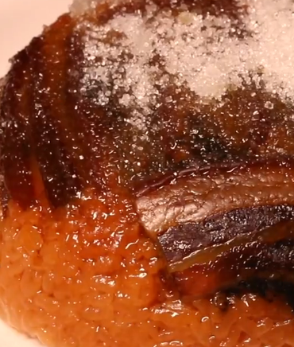
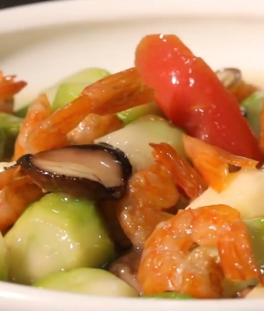
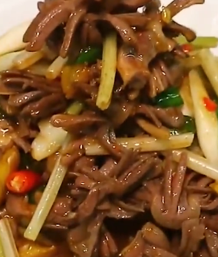
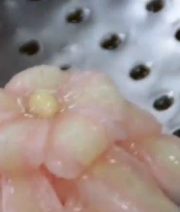
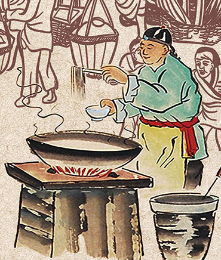

美味佳肴
Delicious Food

-
五香蛋由来
五香蛋： 状元豆是 南京夫子庙的 特色小吃之一。相传清朝乾隆年间，居住在城南 金沙井旁小巷内的 寒士 秦大士，因家境贫寒，每天读书到深夜，其母就用黄豆加上红曲米、红枣煮好，用小碗把豆子装好，上面加一颗红枣给他吃，并勉励他好好读书，将来好中状元。益处
鸡蛋：润燥、增强免疫力、护眼。八角：理气、止痛、温阳。 花椒：温中、止泻、止痛。 五味调和，百食皆美
五味调和，百食皆美

-
铜锣烧由来
铜锣烧相传是日本江户时代(公元1603年-1876年)，将军武士以军中的铜锣相赠恩人，恩人家贫拿铜锣当平底锅煎烤点心，竟创造出绝世美味。点心形状如铜锣，又以铜锣煎烤而成，故取名为铜锣烧。益处
酸酸甜甜的草莓酱馅料，沁入嘴里的滋味，带给你的诱惑是挡也挡不住；蓝莓酱具有消除眼睛疲劳，预防老化的功效。淡淡蜂蜜香的饼皮，包裹着富含维他命C的果酱，吃起来酸甜可口。
五味调和，百食皆美
-
白糖跑油肉由来
据考回锅肉的来历和祖先祭鬼神有关。在帝王和大户人家里，祭鬼神得用牛羊猪三种动物，而一般的平民老百姓，只能从集市上买一块“二刀”肉，即半肥瘦带皮的猪后腿肉，放在锅里不加调料，白水煮到七八分熟，再放到祭台上祭祀。益处
跑油肉富含蛋白质，适量取用，再搭配适量蔬菜，即可营养均衡。
五味调和，百食皆美
-
龙虾烩菜由来
烩菜，大多为许多原料一起炖、煮制而成。分为河南烩菜、东北乱炖、山西烩菜、博山烩菜、河北熬菜”’等各种做法。上等称“海烩菜”，配有海味，中等的称“上烩菜”，一般的称“行烩菜”。益处
1、提神醒脑 2、下气消食 3、利尿除湿 4、解毒防癌
五味调和，百食皆美
-
辣椒炒鸭胗由来
用辣椒炒鸭胗是我们最家常的一道菜。也是很适合配饭下酒的一道菜。益处
鸭肫即鸭胃，主要营养成分有碳水化合物、蛋白质、脂肪、烟酸、维生素C、维生素E和钙、镁、铁、钾、磷、钠、硒等矿物质。
五味调和，百食皆美
-
清炒虾仁由来
随着大家生活水平的提高，鱼肉虾蟹等已经是餐桌上的常客。可以说是人人会做，家家都做。清炒虾仁，甚至有的人觉得全是虾仁，比较单一，会加入少许清口配菜。其实一道虾仁吃到精髓，便可以反映出厨师乃至餐馆的水平。益处
清炒虾仁因其清淡爽口，易于消化，老幼皆宜，而深受食客欢迎。
美食文化
Cuisine Culture
-
中华美食文化
中国的“吃”文化在世界上是享有盛誉的。“吃”是饮食的一部分，中国的饮食文化源远流长，中国人对于“吃”不单单是要求“饱”，在中国的“吃”文化中它还包含了中国人对人生的思考，对世间万物的认识，其中蕴涵了众多的人生哲理。
俗语说：“民以食为天。”这句话就道出了“吃”对人类的重要性。从人类使用火开始，人类就在不停的钻研“吃”。有了吃，人类结束了“茹毛饮血”的历史，开始进入熟食的阶段，随着历史的进步和社会文明的发展，“吃”已经超越了它的字面意义，逐渐成长为人类历史和人类文明中的又一颗灿烂明珠，并且有着其独特的地位。
中国人的饮食文化在时代的发展中渐渐的融入了众多的新元素，比如在讲究色、香、味的同时，也讲究营养的均衡，视觉的享受，这是饮食文化的进步。中国的饮食文化伴随着中国与世界交流的增多与加深，又酝酿出了新的特色。
美食中华，精神天下